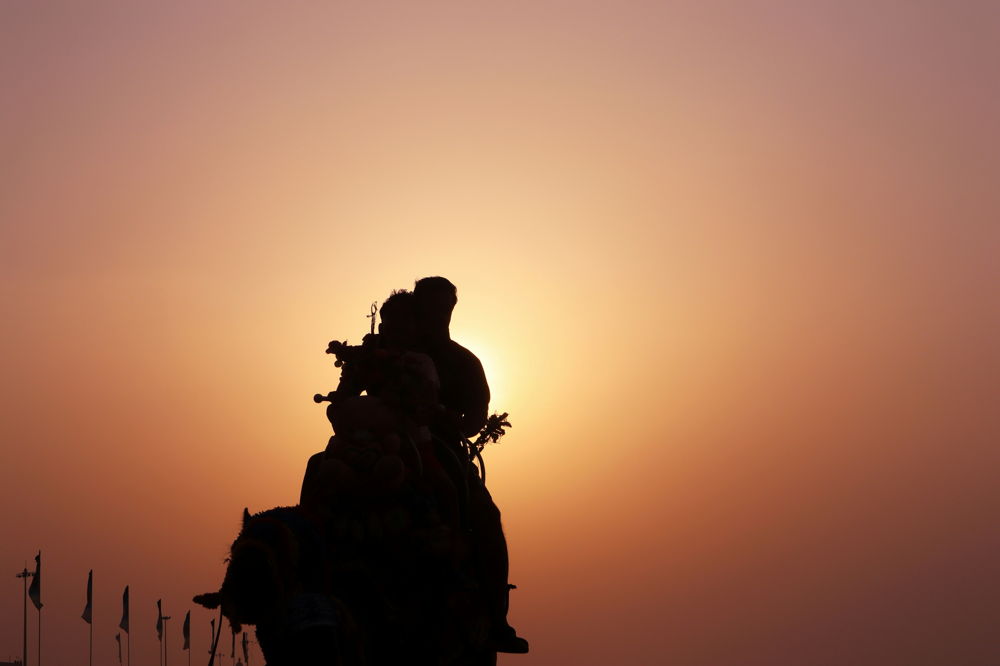

Golden Beach
Puri
Puri is one of the coastal districts of Odisha and is famous for Lord Sri Jagannathan. The district is full of tourist centres and old monuments. The sea beach of puri is 175 km long and looks very beautiful. Chilika lake is situated on the south side of the district. which is famous for the brackish water lake in India. Puri is the headquarter of the district and is situated on the seashore. This can be approached by train from all over India.it is 60 km from Bhubaneswar and can be approached by road or train at any time.
Puri is famous for the world-famous Jagannath Temple & Longest Golden Beach.It is one of the Dhammas (Holiest of the holy place) out of four Dhamas. Puri, Dwarika, Badrinath & Rameswar, in India.Lord Jagannath, Devi Subhadra and elder brother Balabhadra are being worshipped in Puri. The most important festival is the World famous Rath Yatra (Car Festival) & Bahuda Yatra.large crowd is gathered to witness Lord Jagannath during this festival. Shree Jagannath temple is a best tourist places in Puri district.
Explore Travel.jpeg)
The Sun temple at Konark is about 35 kilometres away from Lord Jagannath Temple Puri. Konark is a small village to the south of the Mahanadi delta in the Puri district. It is situated on the east coast of India and is famous for the sun temple, which is 65 km away from Bhubaneswar. It is one of the sacred Kshetra found in Kapila Samhita. Konark is known as Padmakhetra or Arka Kshetra. The term Konark has been attributed to the words Kona and Arka meaning corner and sun respectively. Konark Sun temple is one of the world- famous tourist places in Odisha, India.
Know MoreThe Golden Beach in Puri has given the prestigious Blue Flag tag. It is about 2 km distance from Lord Shree Jagannath temple Puri. India has 8 blue flag beaches, and the golden beach of puri is one of the best of them. Blue Flag Beach is the best and one of the cleanest beaches of Puri, Odisha. There are bathing and changing facilities, Toilet, drinking water, watchtowers, solar lighting system, sitting arrangements, drinking water facilities are available. Golden Beach is one of the best tourist places in Puri District.
Explore Travel
Chandrabhaga Sea Beach has situated on the eastern side of the Sun temple of Konark in the Puri district of Odisha. Thousands of tourists visit here only to see the mesmerizing sight of Sunrise. The place is quiet, scenic and beautiful With its golden sandy beach and crystal green water. It is the 1st blue flag certified sea beach in India and just 3 km away from the Konark Sun temple in Odisha and 34 km distance from Puri. The natural beauty of the Beach enjoyed in the time of Sunrise and Sunset is charming. Chandrabhaga Beach is the Best Tourist Places in Puri, Odisha
Know MoreSatapada is located on the southeast side of the Chilika lagoon and is 50 km from Puri. It is the largest brackish water in Asia. Satapada Chilika covers an area of 1165 sq. Km over the district of Puri, Khorda and Ganjam. Chilika is home to more than a hundred species of fish and Irrawaddy dolphins. Chilika Satapada has the second largest congregation of migratory birds in the world after Lake Victoria in Africa. Satapada Chilika lake is the best tourist places in Puri, Odisha
Explore Travel (1).jpeg)

Sakhigopal is 20 km away from puri on the way to Bhubaneswar. The life-size image of Lord Krishna is known as Sakhigopal. The Temple is formally known as Satyabadi Gopinatha. As per the Historical reference, God Gopal is the incarnation of Lord Krishna. Gopal comes from Brundaban to adduce witnesses in a dispute among two Brahmins and stayed back inside a beautiful Bakul and Chhuriana grove at Sakhigopal. The main festivals of temple Dolapurnima, Chandan Yatra, are Kartika AnlaNabami, Purnami. Sakhigopal Mandir is one of the famous temples in Puri.
Know More